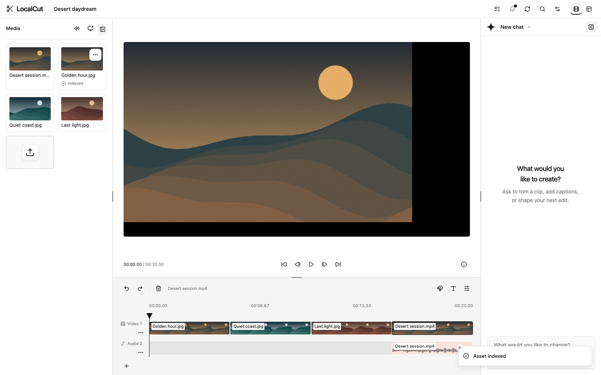
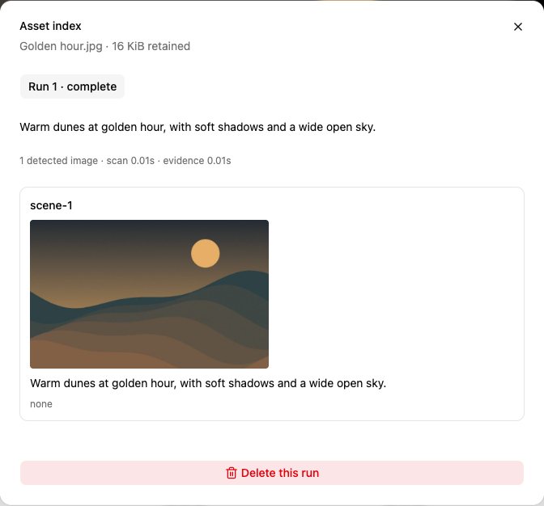
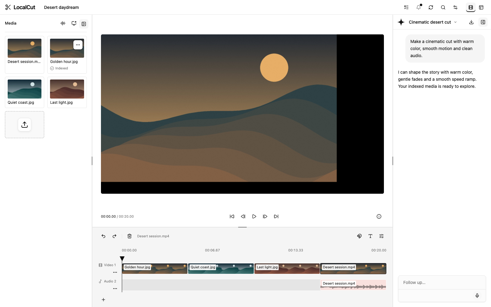
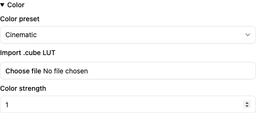
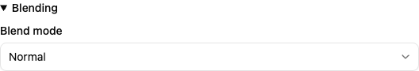
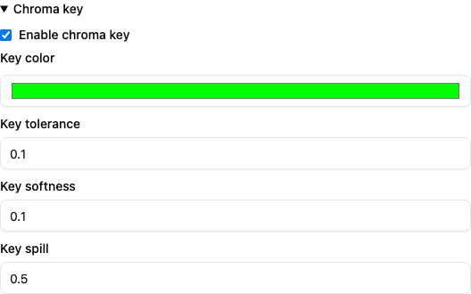
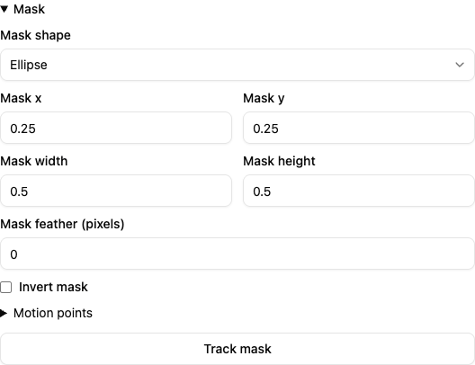
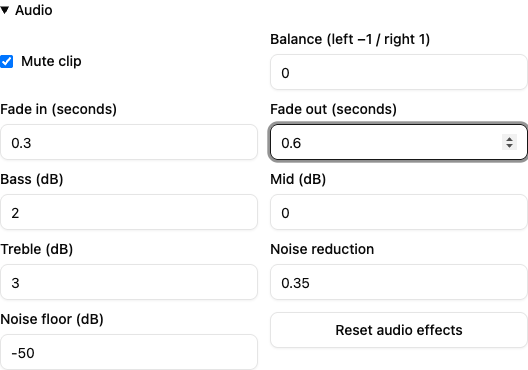

LocalCut / The creative workspace
Every part
of your story.
Media. Intelligence. Precision.
01 / Media
Bring it all together.



VIDEO / AUDIO / IMAGES / TEXT / CAPTIONS
Drag & dropScreen captureSpeech generation
02 / Indexing
Find the moment.
AI DEMO

01 / SCENE
See more.
Search smarter.
golden hourwarmlandscape
Scene evidence. Saved observations.
Searchable context for your
next edit.
03 / Editing chat
Say it. Shape it.
AI DEMO
Your idea.
In the edit.
“Warm color.
Smooth motion.
Clean audio.”
Smooth motion.
Clean audio.”
Retained conversationsContext & skillsEdit & export tools

04 / Video — color & compositing
Make every frame yours.
LOOK / CINEMATIC
Color presets + .cube LUTs


Blend + chroma key

10 BLEND MODES / KEY COLOR / TOLERANCE / SOFTNESS / SPILL
05 / Video — precision & motion
Move beyond the cut.
LOCAL MASK TRACKING

Animate
Keyframes / transform / crop
opacity / filters / blur
Connect
Crossfades / slides / zooms
black / blur dissolve
Tell the story
Styled + animated text
captions / local transcription
FEATHER / INVERT / MOTION POINTS / GROUPS / RIPPLE / STORYBOARD
06 / Audio — sound & timing
Feel the difference.

SCULPT THE SOUND
BASS
MID
TREBLE
SPEED RAMPS / CURVE · LINEAR · STAIRCASE
EQ / NOISE REDUCTIONGAIN / BALANCE / MUTEFADE IN / FADE OUTSPEED / KEEP PITCHSEPARATE AUDIO / MULTITRACKTRIM / SPLIT / LOOP / PHRASE EDITS

LocalCut
Make the cut. Own your story.
MEDIA / INDEX / CHAT / VIDEO / AUDIO
wilsonle.github.io/LocalCut